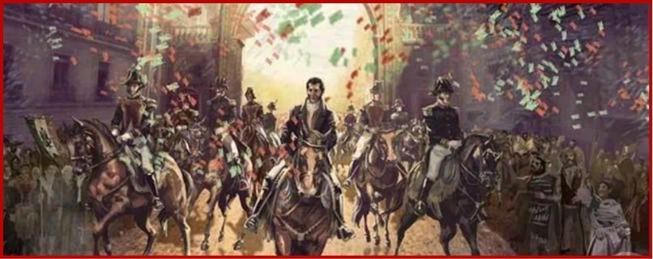

El famoso "Grito" no fue exactamente como lo conocemos hoy. Miguel Hidalgo hizo el llamado a levantarse contra el gobierno en la madrugada del 16 de septiembre de 1810, pero no existe una transcripción totalmente segura de sus palabras exactas.
La conspiración de Querétaro fue descubierta antes de que los insurgentes estuvieran listos, por lo que Hidalgo decidió actuar inmediatamente.
La campana que tradicionalmente se relaciona con el Grito fue trasladada de Dolores a la Ciudad de México en 1896, durante el gobierno de Porfirio Díaz.
Al principio, el movimiento tenía objetivos relacionados con terminar con el gobierno de los españoles peninsulares y defender los derechos de los habitantes de Nueva España. La idea de independencia evolucionó durante la guerra.
La Alhóndiga de Granaditas y "El Pípila"
La tradición cuenta que Juan José de los Reyes Martínez Amaro, "El Pípila", se colocó una enorme losa de piedra en la espalda para protegerse de las balas mientras se acercaba a la puerta de la Alhóndiga para incendiarla. Es una de las historias más famosas de la Independencia, aunque los historiadores han debatido algunos detalles de este relato.
